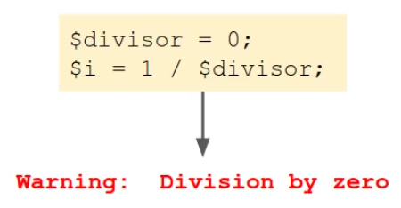
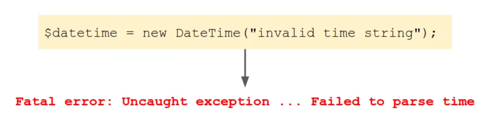
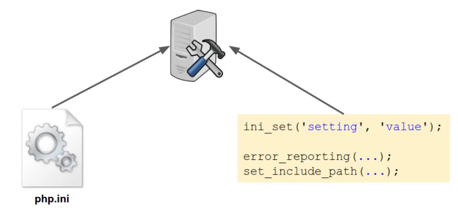

Put application configuration settings in a separate file
Applicatoin configuration
-->Configuration settings should be separate from the rest of the code
-->Configuration settings are different when developing and in production
-->Settings need to be easily changed when moving code between servers
------------------------------------------------------------
How PHP reports problems, errors, exceptions, and how handle them
1-Errors and exceptions occur when something goes wrong in the code
2-PHP provides both errors and exceptions to tell us when there's a problem
3-If we don't write code that handles them, the program will stop
Errors
1-Internal PHP functions mainly use errors to signal a problem
2-Errors generally occur at the language level, for example a syntax error or an invalid action with a variable

Triggering errors manually
-->Can be generated manually using the trigger_error function:


Exceptions
-->Exceptions are the errors you get when dealing with classes and objects
-->Modern object oriented PHP extensions generally use exceptions to signal a problem

Raising exceptions
-->Can be generated or "thrown" manually using the throw statement and passing in a new Exception object:

Handling exceptions
-->Unlike errors, exceptions can be caught and dealt with, allowing the program to continue:

Converting errors to exceptions
1-The easiest way to handle both types is to convert errors to exceptions, then only one handler is needed
2-So when an error occurs, an exception is raised instead
3-Exceptions have the added benefit of having a stack trace, which is helpful when debugging

---------------------------------------------------------
Handling errors and exceptions

Database errors when using PDO
-->Throw an Exception when a database error occurs

---------------------------------------------------------
PHP configuration settings
1-PHP has various settings that can be configured, e.g show or hide errors amount of memory to use
2-Current settings can be viewed using the phpinfo() command
3-Settings are stored in the php.ini configuration file:
Changing PHP settings

-->You can change PHP settings directly from php.ini file which affects all the scripts on the server or you can change them in code which only affect a current script, in code ex:
ini_set('setting', 'value');
error_reporting(....);
set_include_path(....);
---------------------------------------------------------
PHP error configuration
1-Errors occur when something goes wrong in the code
2-PHP can be configured to show or hide errors, or only show errors of certain types
3-We want to see errors so we can fix them
Display all types of errors
-->Configure which type of errors to display
ex:
error_reporting(E_ALL);
---------------------------------------------------------
Show detailed error messages to developers, friendly error messages to user


Logging the error
1-if an error occurs in production, we still want to know the details
2-Save the error message so we can still access it

---------------------------------------------------------
Categorise different types of errors using HTTP status codes
HTTP status codes
-->HTTP has many status codes that are sent from the server to the browser

Sending status codes with exceptions

---------------------------------------------------------
Laravel-->need power web server to work
phalcon-->if a speed is your main concern
---------------------------------------------------------
Summary
1-Code organised into Models, views and Controllers
2-Advanced router
3-Classes in namespaces with autoloading
4-Controllers with action filters
5-Views including a template engine
6-Models with resource-friendly database connectivity
7-Environment-specific configuration and error handling
8-Understand how MVC frameworks work